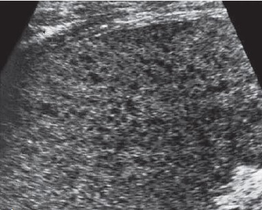
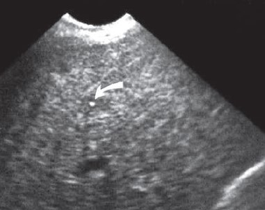

Hepatic Candidiasis
Introduction
Hepatic candidiasis, also called hepatosplenic candidiasis or chronic disseminated candidiasis, is a manifestation of systemic fungal infection most commonly seen in immunocompromised patients. Ultrasound plays a crucial role in early detection and monitoring of these fungal microabscesses.
Key Risk Factors
- Neutropenic patients (especially post-chemotherapy)
- Hematologic malignancies (leukemia, lymphoma)
- Prolonged antibiotic use
- Stem cell transplant recipients
The characteristic "bull's-eye" or "wheel-within-wheel" lesions are best visualized on ultrasound during the recovery phase when neutrophils return (paradoxical clinical worsening).
Ultrasound Features
Hepatic candidiasis demonstrates evolving sonographic patterns based on disease stage:

1. Early stage (Neutropenic phase)
- Subtle hypoechoic lesions (2-5mm)
- Poorly defined margins
- May be occult on ultrasound (CT/MRI more sensitive)

2. Classic "Bull's-eye" Lesions
- Central hyperechoic nidus (fungal elements)
- Intermediate hypoechoic ring (inflammatory cells)
- Outer hyperechoic rim (fibrosis)
- Most apparent during neutrophil recovery

3. After medical therapy
- Echogenic pattern visualised after medical therapy
Diagnostic Pearls
- Timing matters: Lesions become more visible as neutrophils recover
- Size range: Typically 3-20mm in diameter
- Distribution: Random, diffuse, often numerous (>10 lesions)
Differential Diagnosis
| Condition | Key Differentiating Features |
|---|---|
| Pyogenic abscess | Larger (>2cm), thick-walled, air bubbles may be present |
| Metastases | Variable appearance, often larger, known primary |
| Lymphoma | Infiltrative pattern, hepatosplenomegaly, adenopathy |
| Sarcoidosis | Non-calcified hypoechoic nodules, often with lung findings |
Clinical Clues to Diagnosis
- Persistent fever despite antibiotics in neutropenic patient
- Rising alkaline phosphatase with normal bilirubin
- Simultaneous splenic involvement (80% of cases)
- Blood cultures positive in only 50% of cases
Management Implications
1. Monitoring Treatment Response
- Lesions may initially increase in size with immune reconstitution
- Gradual decrease in number/size over weeks-months
- Complete resolution can take 6-12 months
2. Recommended Follow-up Protocol
- Baseline ultrasound at diagnosis
- Repeat every 2-4 weeks during acute treatment
- Monthly until lesions stabilize/resolve
- Monitor for complications (abscess formation)
3. Antifungal Treatment Options
- First-line: Echinocandins (caspofungin, micafungin)
- Alternatives: Liposomal amphotericin B, voriconazole
- Treatment duration typically 2-4 weeks after lesion resolution